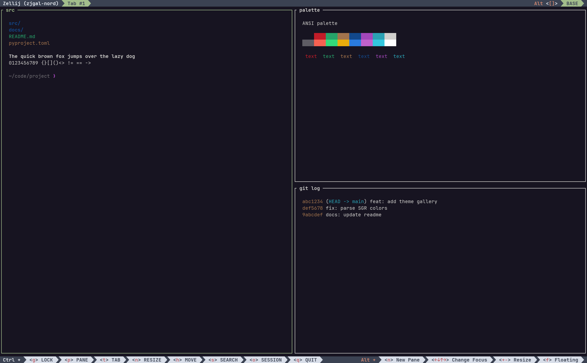

Set permanently — add to ~/.config/zellij/config.kdl
theme "nord"
Try it — start a new session with this theme
zellij options --theme nord
nord
~/.config/zellij/config.kdltheme "nord"
zellij options --theme nord